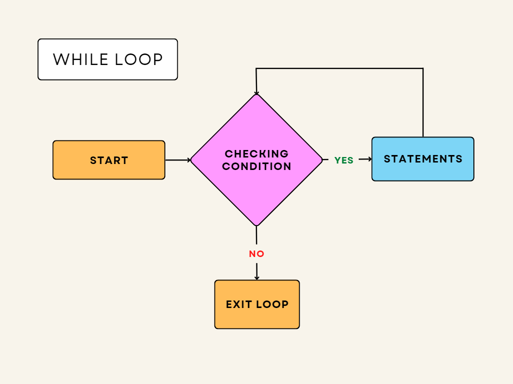
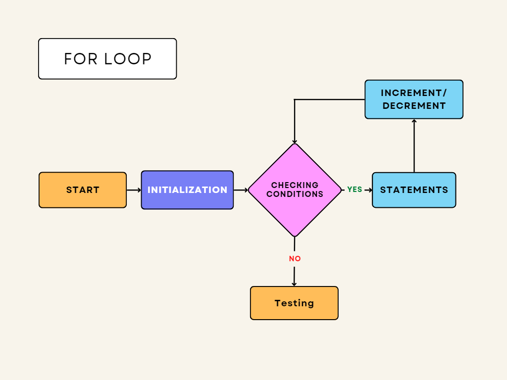

Looping in programming languages is a feature that facilitates the execution of a set of
instructions/functions repeatedly while some condition evaluates to true.
In computer programming, a loop is a sequence of instructions that is repeated until a certain
condition is reached.
An operation is done, such as getting an item of data and changing it, and then some condition
is checked such as whether a counter has reached a prescribed number.
Counter not Reached: If the counter has not reached the desired number, the next instruction in
the sequence returns to the first instruction in the sequence and repeats it.
Counter reached: If the condition has been reached, the next instruction “falls through” to the
next sequential instruction or branches outside the loop.
There are mainly two types of loops:
Entry Controlled loops: In these types of loops, the test condition is tested before entering
the loop body. For Loops and While Loops are entry-controlled loops.
Exit Controlled loops: In these types of loops the test condition is tested or evaluated at the
end of the loop body. Therefore, the loop body will execute at least once, irrespective of
whether the test condition is true or false. The do-while loop is exit controlled loop.

Syntax:
while (condition) {
statements
increment/decrement
}

Syntax:
for (initialization; condition; increment/decrement) {